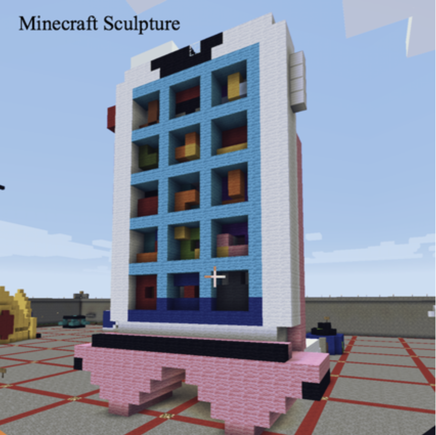

Minecraft
This is an object with cultural significance in our modern age, especially since the layout of our phones and the popularity of brands changes throughout the globe. Based on my App, I added these design on the phone's screen App. In our the 90th generation , especially inseparable from the digital device. This is on behalf of the rapid development of the era and is now an important concept of social society.


The Phone and its Stand
This is my first time 30 mins 3D printing piece. Unfortunately, the epidemic started, and I couldn't print a second model.